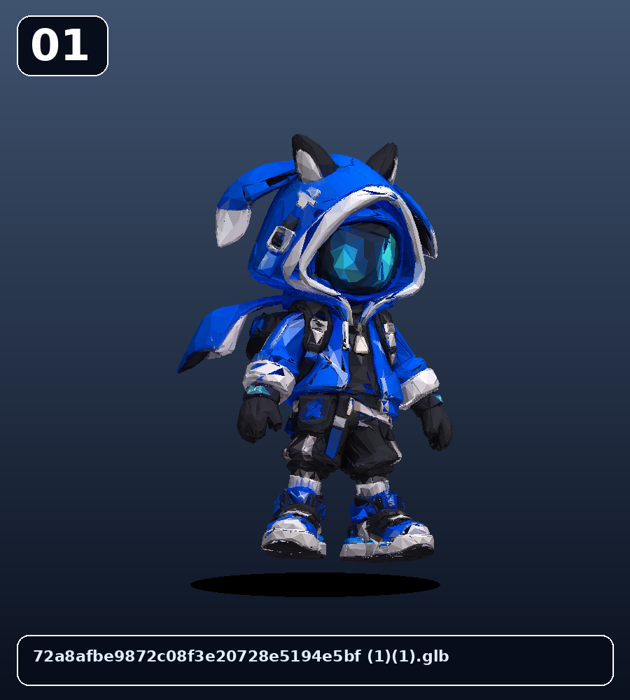
01 · Игрок
Исходный персонаж, выставлен в лаборатории как тестовый объект.
Все карточки ниже — отдельные снимки реальных GLB-файлов, находящихся в демке. Геометрия моделей не переделывалась.

Исходный персонаж, выставлен в лаборатории как тестовый объект.
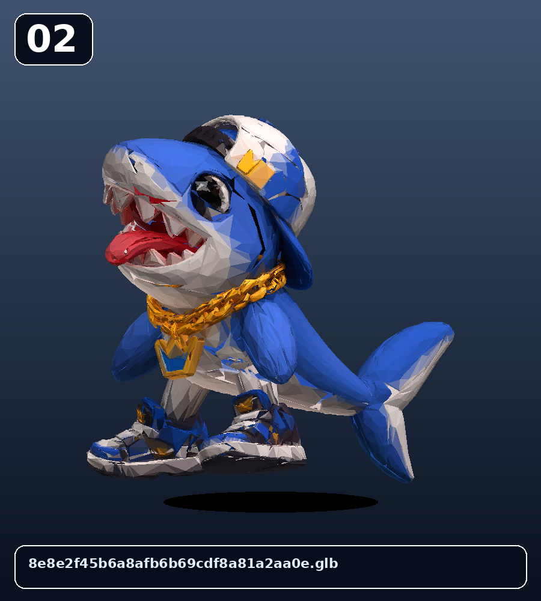
Физический груз внутри прозрачного куба: его нужно донести до кнопки.
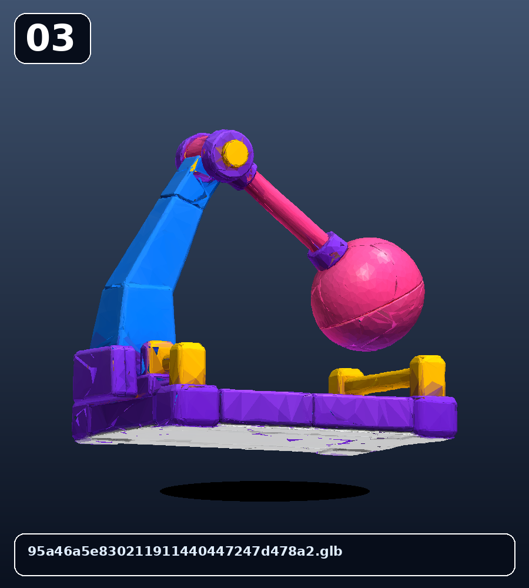
Индустриальный реквизит испытательной камеры.
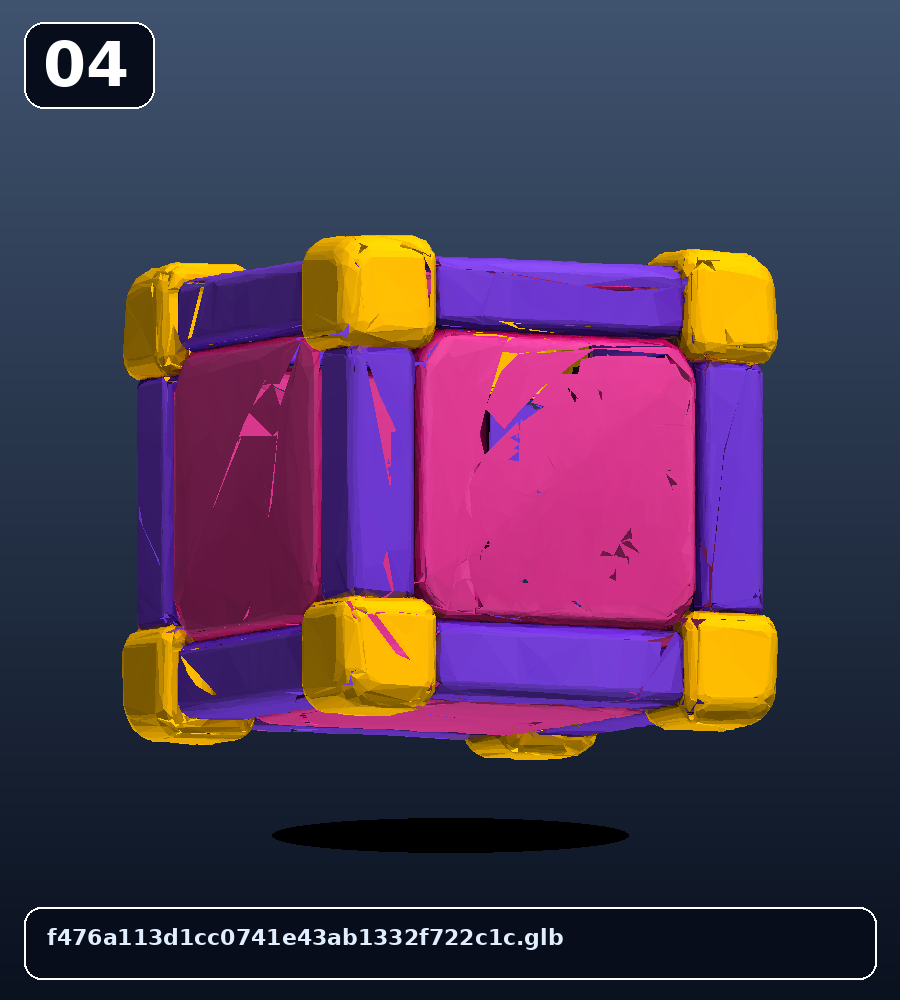
Нажимная платформа, открывающая дверь к выходу.
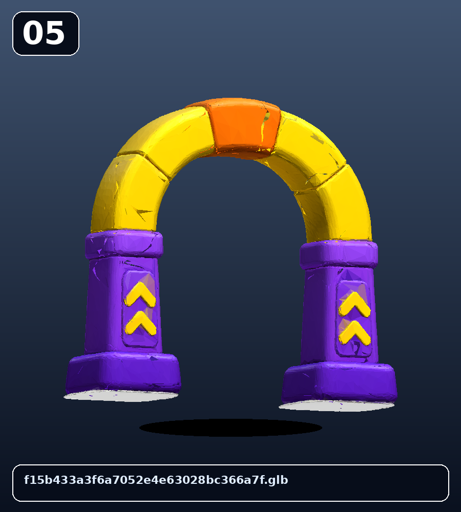
Финальная точка тестовой камеры.
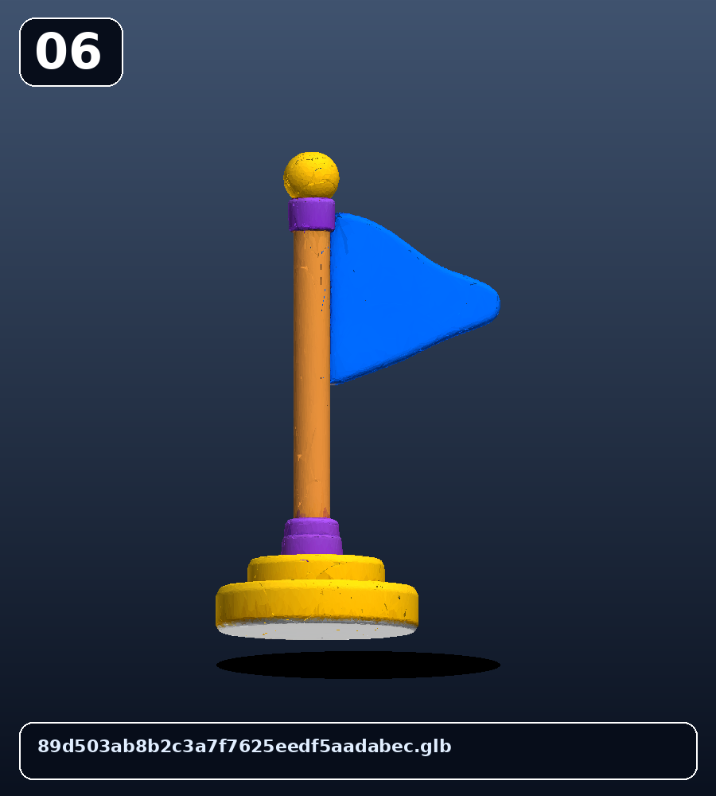
Маркер завершения уровня.
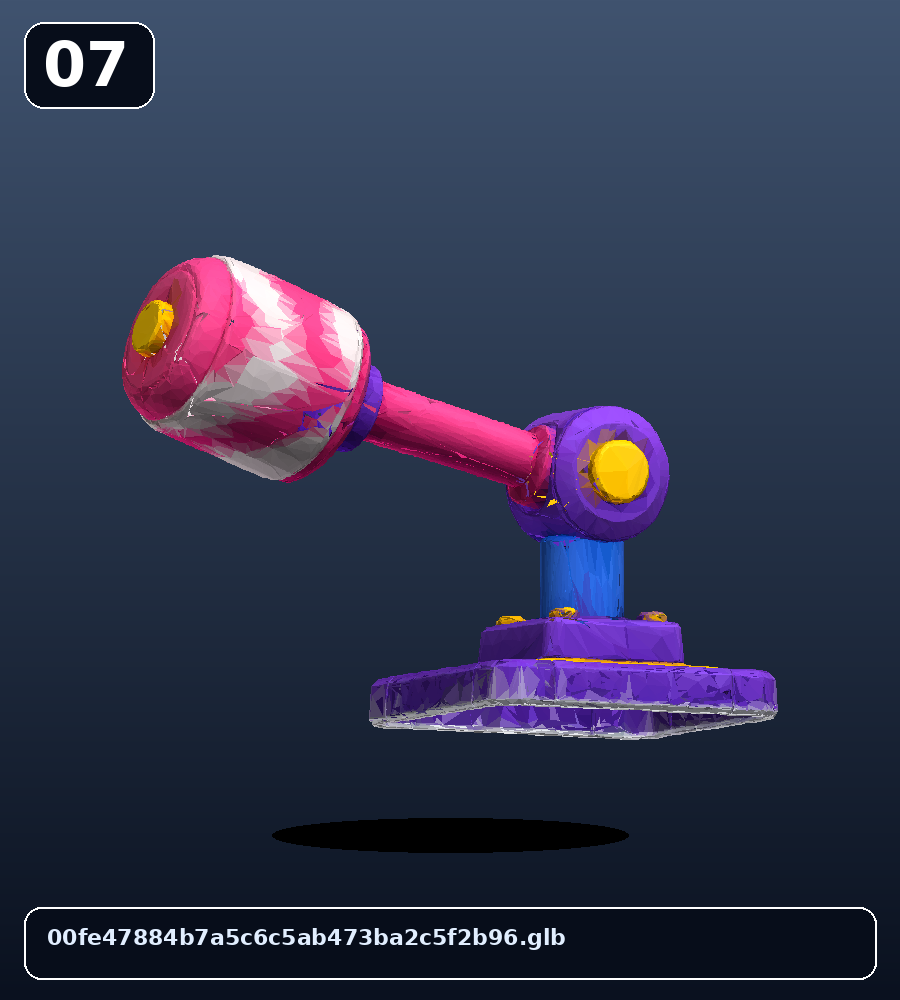
Движущаяся деталь оборудования лаборатории.
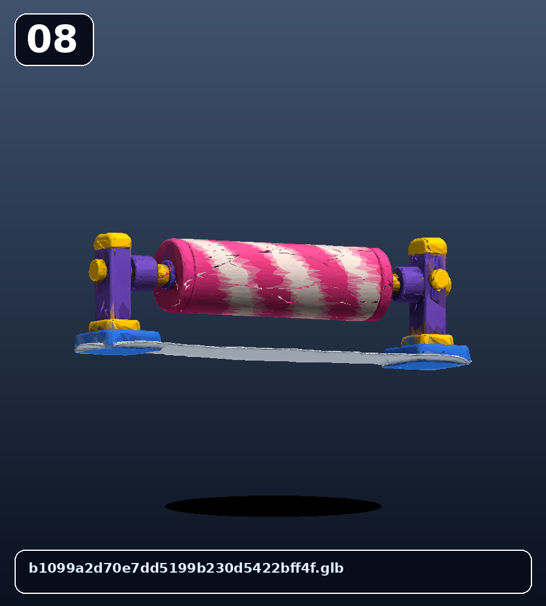
Часть технической зоны камеры.
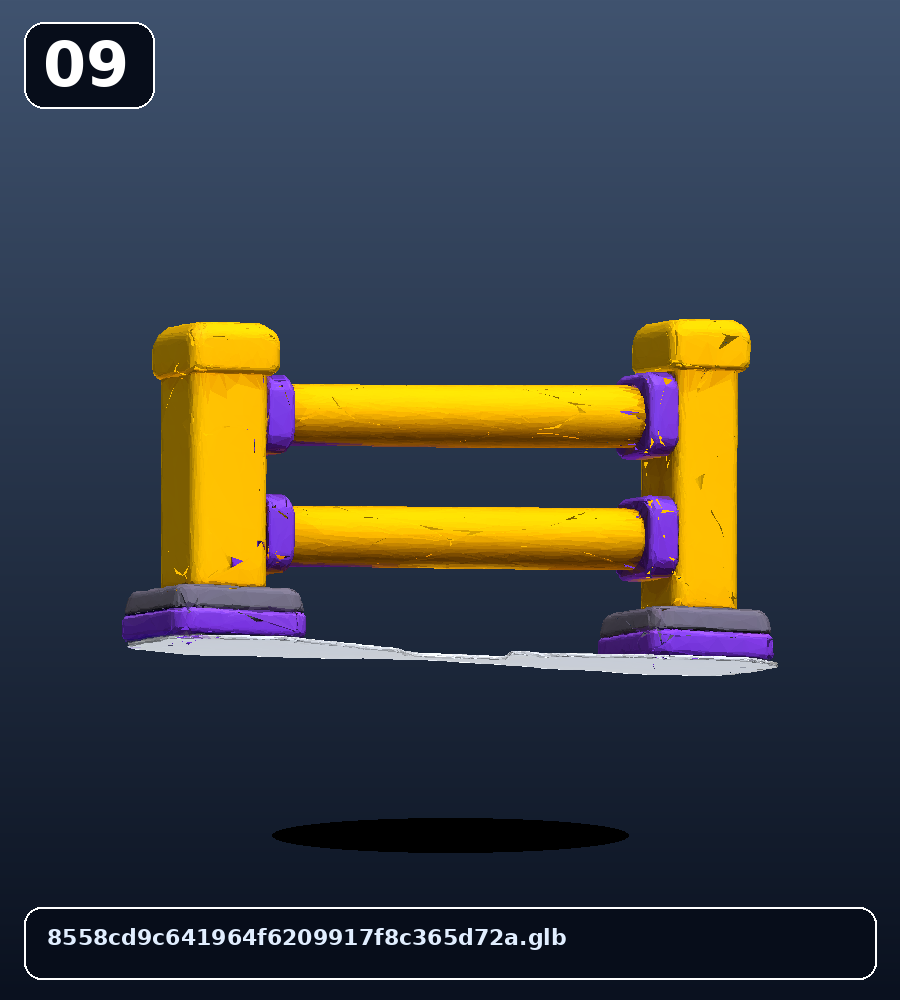
Безопасные границы и маршрут игрока.
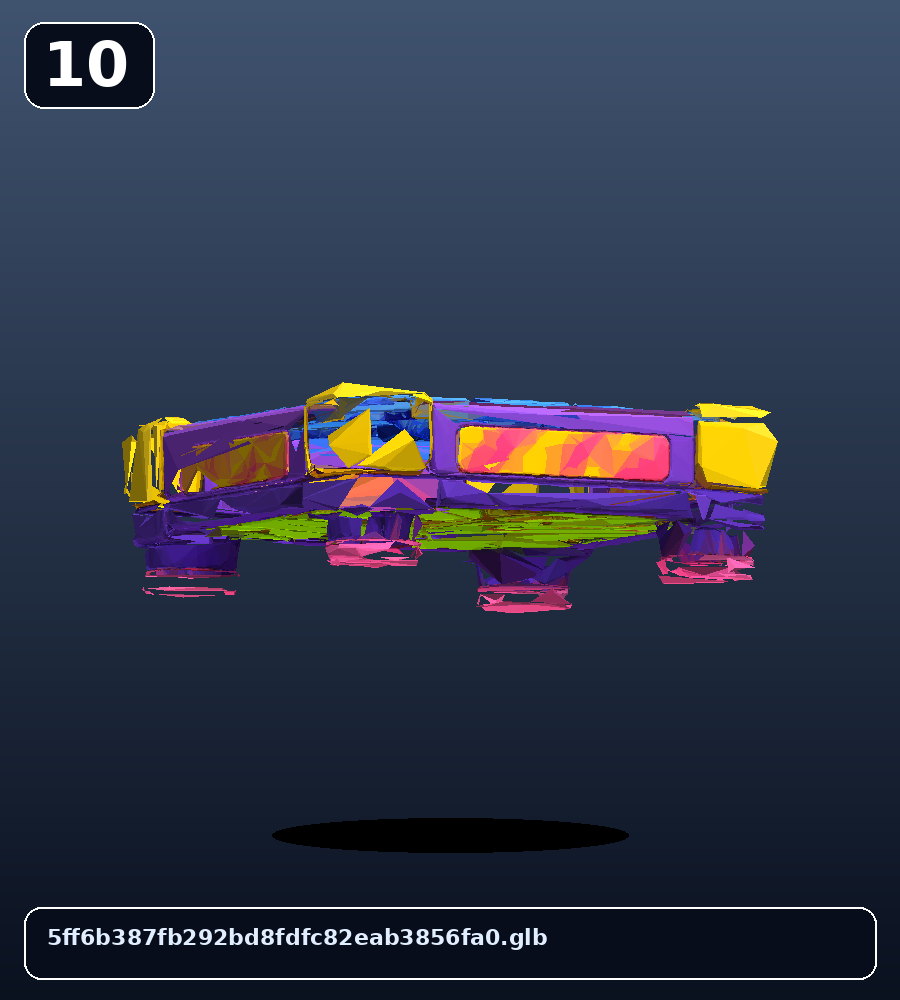
Основа для лабораторных конструкций и пьедесталов.
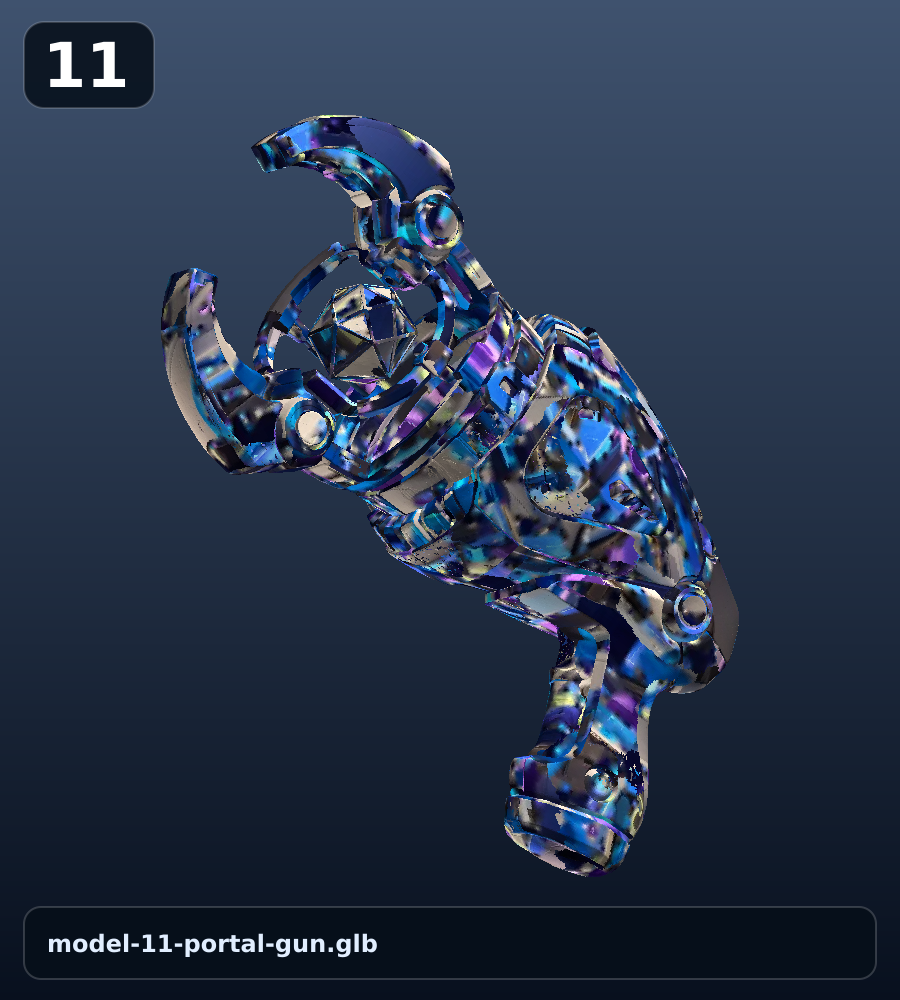
Оружие от первого лица для синего и оранжевого порталов.